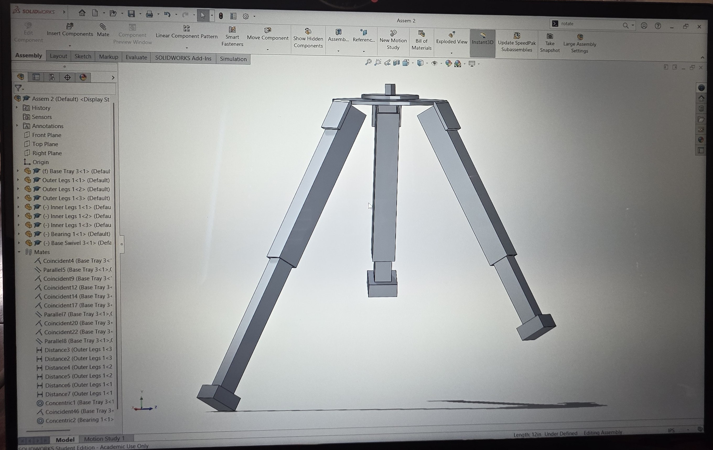
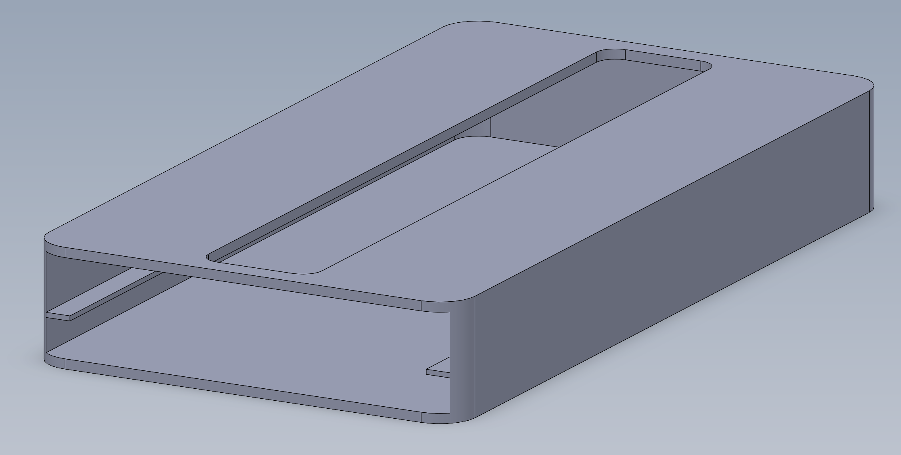
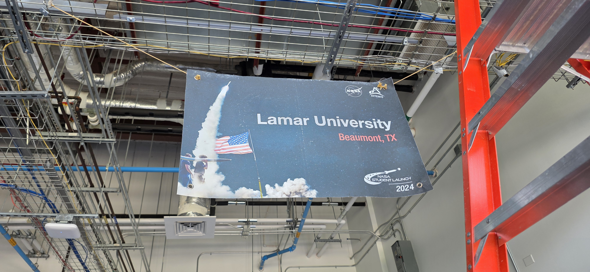
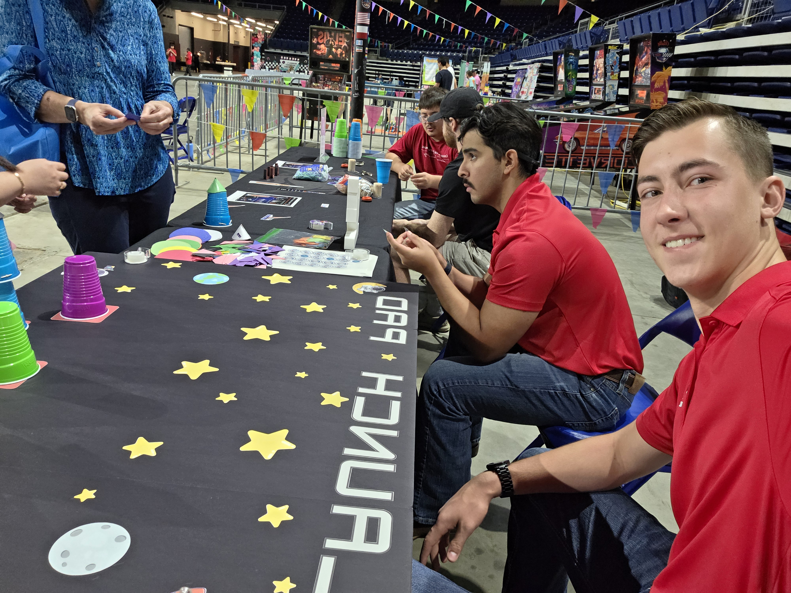
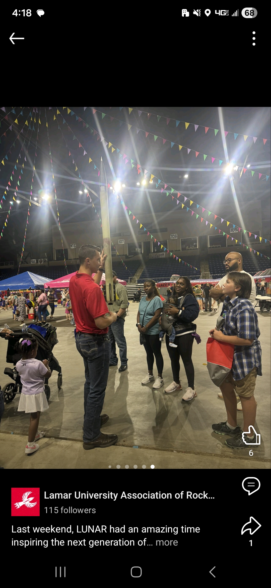
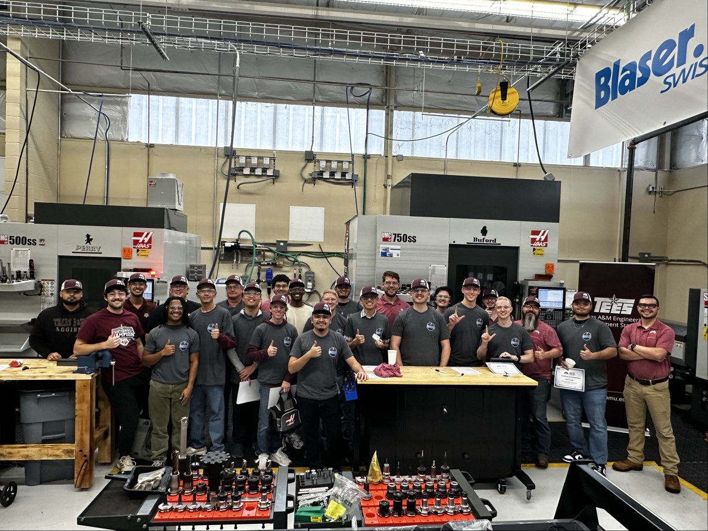

Projects
/// ENGINEERING & DESIGN PORTFOLIO

LUNAR
Rocket Tracking Ground Station
Engineered a leveling tripod system with 360° rotation for real-time rocket telemetry. Integrated custom PCB mounts and high-torque servos.
#SystemsEngineering
#Mechatronics
#Telemetry

Personal
Parametric Minimalist Wallet
Designed a fully parametric wallet in SolidWorks focusing on printability and ergonomics. Iterated through 5+ prototypes to validate snap-fit tolerances for daily use.
#ProductDesign
#3DPrinting
#Iterative
Lab Gallery



